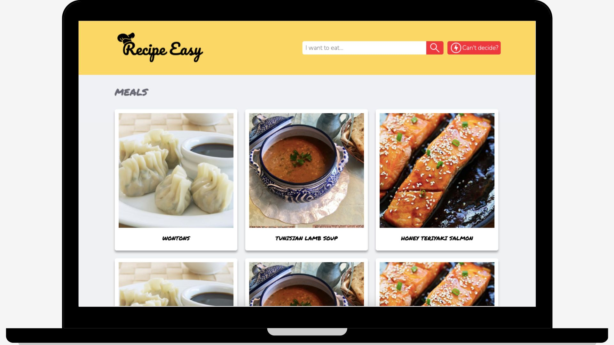
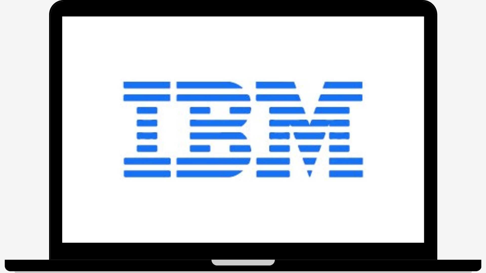
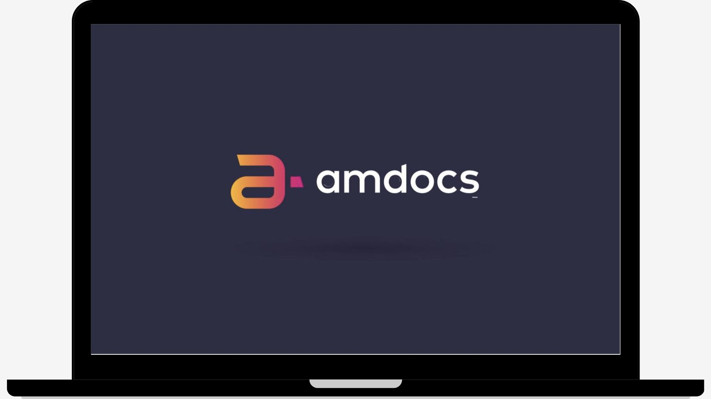
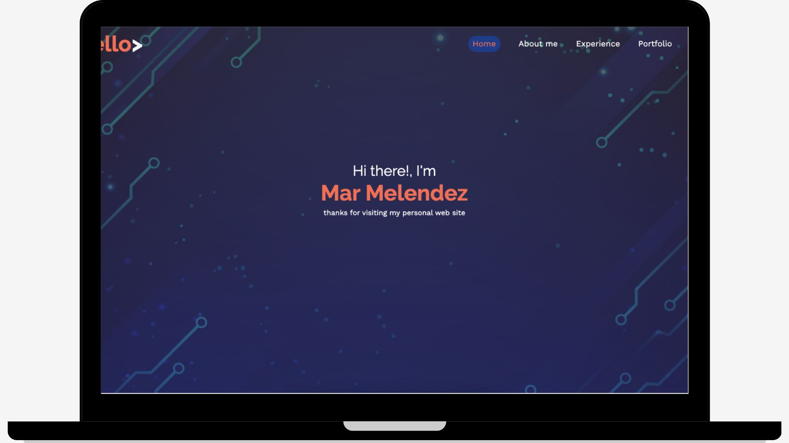
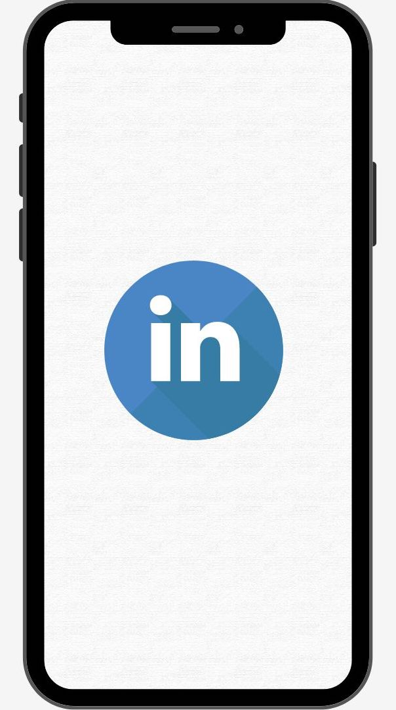
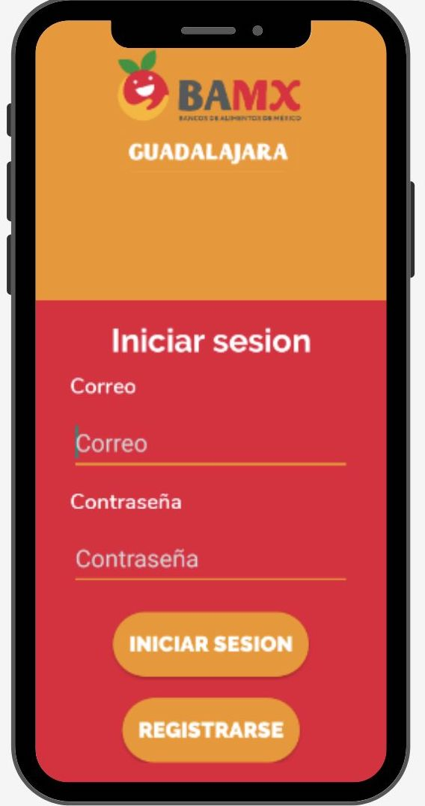
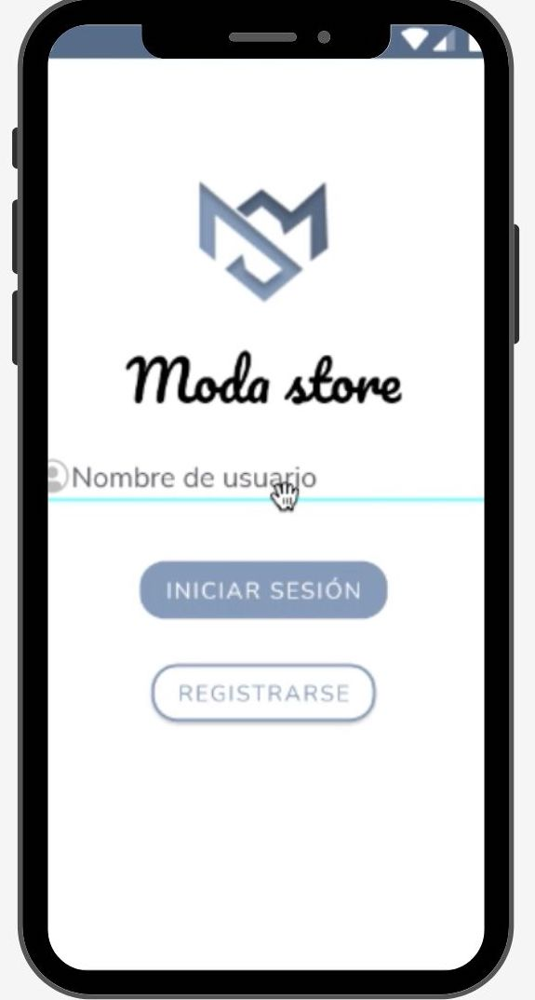
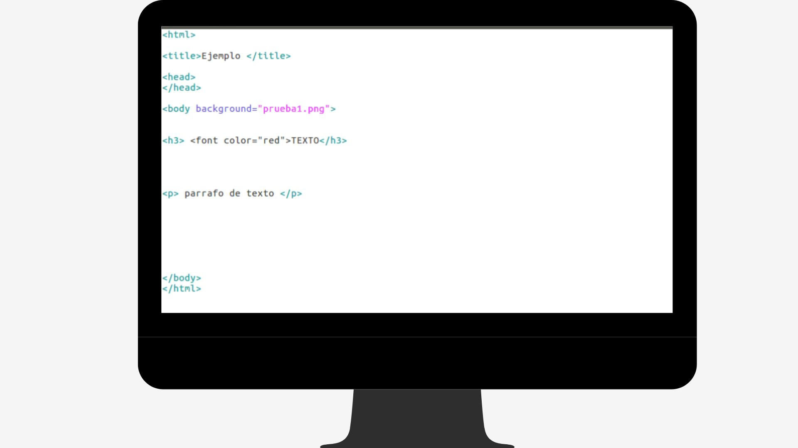
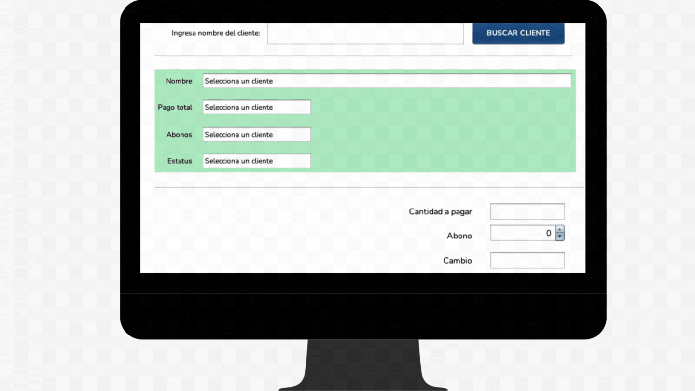
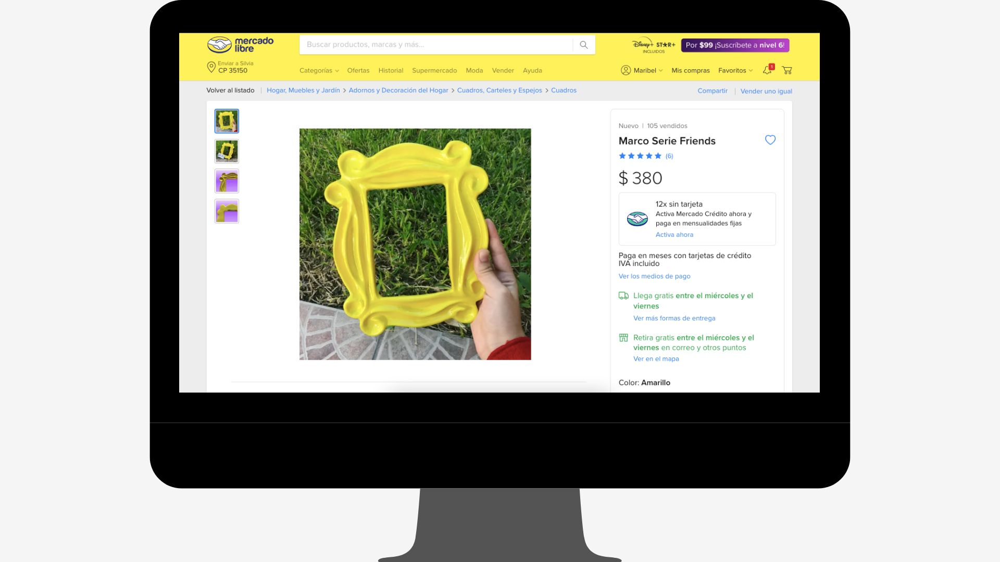

Portfolio
Web development
Recipe finder

Tecnologies: HTML, CSS, JavaScript, Webpack, API
Description: To create an application that gives access to recipes from an API, I worked on both, front and back end, to implement a responsive design for the categories section. The result is a scroll view that fetches data from the API and displays the 14 categories.
Traffic Simulation

Tecnologies: Python, three.js, AgentPy library
Description: The intersection between two streets in the city of Zapopan is full of traffic especially during rush hour and makes the driver take more time to reach the destination. For this project, I was in charge of creating a 2D and 3D interface that simulates 1 to 20 cars and their behavior. This way we can identify the possible causes of traffic.
IBM Peripheral devices Loan

Tecnologies: React, Node.js, JavaScript, Trello
Description: An internal tool such as device management is essential for any organization. We worked on the implementation of a web application using Carbon System Design components to give a tool that keeps track of the request and loans of peripheral devices. I coordinated the design and front-end development of this project.
Amdocs Hiring Tracker

Tecnologies: HTML, CSS, JavaScript, MySQL
Description: The hiring process of a candidate can take some time and involve many manual tasks. To reduce the waiting time and facilitate the process, my team and I designed and built a website to track progress. To accomplish this, we needed to maintain constant communication with Amdocs and between us. I worked on creating the header and the resume table that displays the candidates and their status.
Reading blog

Tecnologies: HTML, CSS and JavaScript
Description: One of my personal goals last semester was to read two books for a class. A fun way to do this, recommended by our professor, was to document the reading process in a personal blog. I took this as an opportunity to practice my front-end skills and as a result I got this website as a blog template.
My portfolio

Tecnologies: HTML, CSS and JavaScript
Description: In order to be able to show my work, the projects I have contributed to and in general, my career as a student and future software engineer, I decided to apply the knowledge acquired in online courses to create my personal site.
Mobile development
LinkedIn Inbox Shortcuts

Tecnologies: Android Studio, Java, Kotlin, Jira, Github
Description: Implemented a swipe gesture that gives access to 3 main shortcuts in inbox conversations so that users can have a better experience and a more discoverable way to find these actions. Through this project I was able to work on refactoring issues, understand the architecture of the application and prepare for the release of the feature for the company. This feature is expected to launch to 66 million users.
Food Bank of Guadalajara App

Tecnologies: Android SDK, Kotlin, XML, Figma
Description: Talking with the organization, we were able to learn about their needs and my team and I proposed an application design that aims to expand local scope by providing volunteer/contact request forms, account creation and online donations. I designed the user interface and flows, implemented the login screens, menus and forms and connected the application to Paypal and Firebase services.
Clothing store Android App

Tecnologies: Android, Java, Kotlin, XML
Description: Having your own app for your business can increase your sales and improve customer service, but at the same time it requires time and money. We want to use technology as a useful resource and not as an impediment to grow, so we decided to create an app for clothing stores with the goal that this will help businesses to make the most of technology.
Other cool projects :D
Endless runner game

Tecnologies: Unity, C#
Description: In order to bring a new version of the endless runner game, I developed a 2D unity project that allows the user to use some keyboard buttons to interact with the UI to move the player, collect coins and have fun!
Lexical Analyzer

Tecnologies: Java, HTML, CSS
Description: Seeking to understand how compilers work, to learn a new programming language (Java) and to apply parallel and concurrent programming, I have created this lexical analyzer that takes a txt file and converts it into an html that adds different colors to those words that are predefined keywords. (what would be reserved words in programming languages).
Payment Control System

Tecnologies: Java GUI, Sql
Description: I created a Java desktop application with a sql database that maintains the status of a company's loans and gives the option to download the payment record, which allows to perform these manual tasks in less time and less risk of human error.
Selling clay figures
